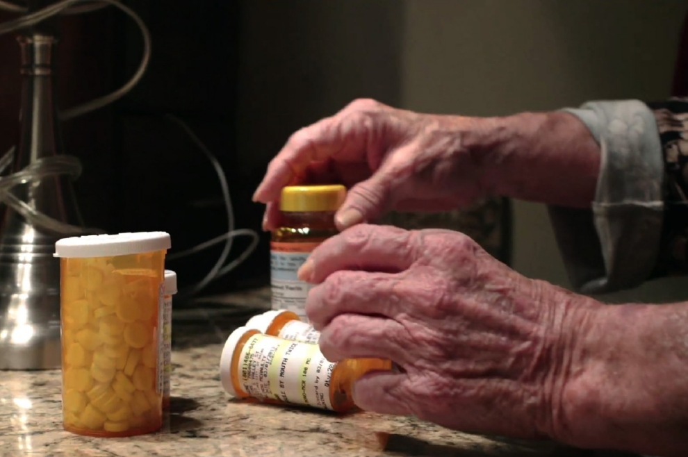

Drug-related problems are common in the elderly and include drug ineffectiveness, adverse drug effects, overdosage, underdosage, and drug interactions. Drugs may be ineffective in the elderly because clinicians underprescribe (eg, because of increased concern about adverse effects) or because adherence is poor (eg, because of financial or cognitive limitations). Adverse drug effects are effects that are unwanted, uncomfortable, or dangerous. Common examples are oversedation, confusion, hallucinations, falls, and bleeding. Among ambulatory people ≥ 65, adverse drug effects occur at a rate of about 50 events per 1000 person-years. Hospitalization rates due to adverse drug effects are 4 times higher in elderly patients (about 17%) than in younger patients (4%).
A drug given to treat one disease can exacerbate another disease regardless of patient age, but such interactions are of special concern in the elderly. Distinguishing often subtle adverse drug effects from the effects of disease is difficult (see Drug-Disease Interactions in the Elderly (Based on the American Geriatrics Society 2012 Beers Criteria Update)) and may lead to a prescribing cascade. A prescribing cascade occurs when the adverse effect of a drug is misinterpreted as a symptom or sign of a new disorder and a new drug is prescribed to treat it. The new, unnecessary drug may cause additional adverse effects, which may then be misinterpreted as yet another disorder and treated unnecessarily, and so on.
Many drugs have adverse effects that resemble symptoms of disorders common among the elderly or changes due to aging. The following are examples:
May cause symptoms that resemble Parkinson disease. In elderly patients, these symptoms may be diagnosed as Parkinson disease and treated, possibly leading to adverse effects from the antiparkinson drugs (eg, orthostatic hypotension, delirium, nausea).
(eg, donepezil) may be prescribed for patients with dementia. These drugs may cause diarrhea or urinary incontinence. Patients may then be prescribed an anticholinergic drug (eg, oxybutynin) to treat the new symptoms. Thus, an unnecessary drug is added, increasing the risk of adverse drug effects and drug-drug interactions. A better strategy is to reduce the dose of the cholinesterase inhibitor or consider a different treatment for dementia (eg, memantine) with a different mechanism of action.
In elderly patients, prescribers should always consider the possibility that a new symptom or sign is due to drug therapy.
| Disease | Drugs | Possible Adverse Effects |
|---|---|---|
| Cardiovascular | ||
| Heart failure | Cilostazol, COX-2 inhibitors,dronedarone, nondihydropyridine Ca channel blockers* (diltiazem, verapamil), NSAIDs, pioglitazone, rosiglitazone | May promote fluid retention and exacerbate heart failure |
| Syncope | Acetylcholinesterase inhibitors, chlorpromazine, peripheral α-blockers (doxazosin, prazosin, terazosin), tertiary TCAs, thioridazine, olanzapine | Increased risk of orthostatic hypotension or bradycardia |
| CNS Drugs | ||
| Chronic seizures or epilepsy | Bupropion, chlorpromazine, clozapine, maprotiline, olanzapine, thioridazine, thiothixene, tramadol | |
| Delirium | All TCAs, benzodiazepines, drugs that have anticholinergic effects, chlorpromazine, corticosteroids, H2 receptor blockers, meperidine, sedative hypnotics, thioridazine | Worsened delirium in older adults with or at high risk of delirium. If discontinuing drugs used chronically, taper to avoid withdrawal symptoms |
| Dementia and cognitive impairment | Antipsychotics (chronic and as-needed use), benzodiazepines, drugs that have anticholinergic effects, H2receptor blockers, zolpidem | Adverse CNS effects. For antipsychotics, increased risk of stroke and mortality in patients with dementia |
| History of falls or fractures | Anticonvulsants, antipsychotics, benzodiazepines, nonbenzodiazepine hypnotics (eszopiclone, zaleplon, zolpidem), TCAs, SSRIs | Ataxia, impaired psychomotor function, syncope, and additional falls; shorter-acting benzodiazepines are not safer than long-acting ones. Can be used if safer alternatives are not available. Avoid anticonvulsants except for seizure disorders |
| Insomnia | Oral decongestants (pseudoephedrine, phenylephrine), stimulants (amphetamine, methylphenidate, pemoline), theobromines (theophylline, caffeine) | CNS stimulant effects |
| Parkinson disease | Antiemetics (metoclopramide, prochlorperazine, promethazine), antipsychotics (except for quetiapine and clozapine) | Dopamine receptor antagonists with potential to worsen parkinsonian symptoms (less likely with quetiapine and clozapine) |
| GI DRUGS | ||
| Chronic constipation | Drugs that have antispasmodic and anticholinergic effects (antipsychotics, belladonna alkaloids, clidinium-chlordiazepoxide, dicyclomine, hyoscyamine, propantheline, scopolamine, tertiary TCAs [amitriptyline, clomipramine, doxepin, imipramine, and trimipramine]), first-generation antihistamines (brompheniramine carbinoxamine, chlorpheniramine, clemastine , cyproheptadine, dexbrompheniramine,dexchlorpheniramine , diphenhydramine, doxylamine, hydroxyzine, promethazine, triprolidine), nondihydropyridine Ca channel blockers (diltiazem, verapamil), oral antimuscarinics for urinary incontinence (darifenacin, fesoterodine, oxybutynin, solifenacin, tolterodine, trospium) | Can worsen constipation; agents for urinary incontinence: antimuscarinics overall differ in incidence of constipation; response variable; consider alternative agent if constipation develops. |
| History of gastric or duodenal ulcers | Aspirin (> 325 mg/day), non–COX-2 selective NSAIDs | Exacerbate existing ulcers or cause new ulcers. Avoid unless other alternatives are not effective & patients can take a gastro-protective drug (eg, a proton pump inhibitor or misoprostol) |
| Kidney & Urinary Tract | ||
| CKD Stage IV & V | NSAIDs, triamterene | Increased risk of kidney injury |
| Urinary incontinence (all types) in women | Estrogen, oral and transdermal (excludes intravaginal estrogen) | Worsened incontinence |
| Lower urinary tract symptoms, benign prostatic hyperplasia | Drugs that have strong anticholinergic effects (except antimuscarinics for urinary incontinence), inhaled agents that have anticholinergic effects | May decrease urinary flow and cause urinary retention in men |
| Stress or mixed urinary incontinence | α-Blockers (doxazosin, prazosin, terazosin) | Worsened incontinence in women |
Because the elderly often take many drugs, they are particularly vulnerable to drug-drug interactions. The elderly also frequently use medicinal herbs and other dietary supplements (see Dietary Supplements) and may not tell their health care providers. Medicinal herbs can interact with prescribed drugs and lead to adverse effects. For example, ginkgo biloba extract taken with warfarin can increase risk of bleeding, and St. John's wort taken with an SSRI can increase risk of serotonin syndrome. Therefore, physicians should ask patients specifically about dietary supplements, including medicinal herbs and vitamin supplements. Drug-drug interactions in the elderly differ little from those in the general population. However, induction of cytochrome P-450 (CYP450) drug metabolism (see Drug Metabolism) by certain drugs (eg, phenytoin, carbamazepine, rifampin) may be decreased in the elderly; therefore, the change (increase) in drug metabolism may be less pronounced in the elderly. Many other drugs inhibit CYP450 metabolism and thus increase the risk of toxicity of drugs that depend on that pathway for elimination. Because the elderly typically use a larger number of drugs, they are at greater risk of multiple, difficult-to-predict CYP450 interactions. Also, concurrent use of ≥ 1 drug with similar adverse effects can increase risk or severity of adverse effects.
Monitoring drug use involves
Such measures are especially important for elderly patients. Lack of close monitoring, especially after new drugs are prescribed, increases risk of adverse effects and ineffectiveness. Criteria to facilitate monitoring have been developed by the Health Care Financing Administration expert consensus panel as part of drug utilization review criteria. The criteria focus on inappropriate dosage or duration of therapy, duplication of therapy, and possible drug-drug interactions.
A drug is inappropriate if its potential for harm is greater than its potential for benefit. Inappropriate use of a drug may involve
Adverse effects of inappropriate drugs account for about 7% of emergency hospitalizations for patients ≥ 65 yr, and 67% of these hospitalizations are due to 4 drugs or drug classes—warfarin, insulin, oral antiplatelet drugs, and oral hypoglycemic drugs. Some classes of drugs are of special concern in the elderly (see Drug Categories of Concern in the Elderly). Some drugs are so problematic that they should be avoided altogether in the elderly, some should be avoided only in certain situations, and others can be used but with increased caution. The Beers Criteria (see Drug-Disease Interactions in the Elderly (Based on the American Geriatrics Society 2012 Beers Criteria Update)) lists potentially inappropriate drugs for the elderly by drug class; other similar lists are available. However, currently, there are no similar lists of drugs that should be used in the elderly; clinicians must weigh benefits and risks of therapy in each patient.
Despite the Beers and other criteria, inappropriate drugs are still being prescribed for the elderly; typically, about 20% of community-dwelling elderly received at least one inappropriate drug. In such patients, risk of adverse effects is increased. In nursing home patients, inappropriate use also increases risk of hospitalization and death. In one study of hospitalized patients, 27.5% received an inappropriate drug.
Some inappropriate drugs are available OTC; thus, clinicians should specifically question patients about use of OTC drugs and tell patients about the potential problems such drugs can cause.
The elderly are often given drugs (typically, analgesics, H2 blockers, hypnotics, or laxatives) for minor symptoms (including adverse effects of other drugs) that may be better treated nonpharmacologically or by lowering the dose of the drug causing adverse effects. Initiating additional drugs is often inappropriate; benefit may be low, costs are increased, and the new drug may lead to additional toxicity.
Solving the problem of inappropriate use in the elderly requires more than avoiding a short list of drugs and noting drug categories of concern. A patient’s entire drug regimen should also be assessed regularly to determine potential benefit vs harm.
Drug effectiveness is often compromised by lack of patient adherence among the ambulatory elderly. Adherence is affected by many factors but not by age per se. Up to half of elderly patients do not take drugs as directed, usually taking less than prescribed (underadherence). Causes are similar to those for younger adults (see Adherence to a Drug Regimen). In addition, the following contribute:
A regimen using too frequent or too infrequent dosing, multiple drugs, or both may be too complicated for patients to follow. Clinicians should assess patients’ health literacy and abilities to adhere to a drug regimen (eg, dexterity, hand strength, cognition, vision) and try to accommodate their limitations—eg, by arranging for or recommending easy-access containers, drug labels and instructions in large type, containers equipped with reminder alarms, containers filled based on daily drug needs, reminder telephone calls, or medication assistance. Pharmacists and nurses can help by providing education and reviewing prescription instructions with elderly patients at each encounter. Pharmacists may be able to identify a problem by noting whether patients obtain refills on schedule or whether a prescription seems illogical or incorrect.
An excessive dose of an appropriate drug may be prescribed for elderly patients if the prescriber does not consider age-related changes that affect pharmacokinetics (see Pharmacokinetics) and pharmacodynamics (see Pharmacodynamics). For example, doses of renally cleared drugs should be adjusted in patients with renal impairment.
Generally, although dose requirements vary considerably from person to person, drugs should be started at the lowest dose in the elderly. Typically, starting doses of about one third to one half the usual adult dose are indicated when a drug has a narrow therapeutic index or when another condition may be exacerbated by a drug. The dose is then titrated upward as tolerated to the desired effect. When the dose is increased, patients should be evaluated for adverse effects, and drug levels should be monitored when possible.
Overdosage can also occur when drug interactions (see Drug-Related Problems in the Elderly : Drug-drug interactions) increase the amount of drug available or when different practitioners prescribe a drug and are unaware that another practitioner prescribed the same or a similar drug (therapeutic duplication).
Poor communication of medical information at transition points (from one health care setting to another) causes up to 50% of all drug errors and up to 20% of adverse drug effects in the hospital. When patients are discharged from the hospital, drug regimens that were started and needed only in the hospital (eg, sedative hypnotics, laxatives, proton pump inhibitors) may be unnecessarily continued by another prescriber, who is reluctant to communicate with the previous prescriber. Conversely, at admission to a health care facility, lack of communication may result in unintentional omission of a necessary maintenance drug.
Appropriate drugs may be underprescribed—ie, not used for maximum effectiveness. Underprescribing may increase morbidity and mortality and reduce quality of life. Clinicians should use adequate drug doses and, when indicated, multidrug regimens.
Drugs that are often underprescribed in the elderly include those used to treat depression, Alzheimer disease, pain (eg, opioids), heart failure, post-MI (β-blockers), atrial fibrillation (warfarin), hypertension, glaucoma, and incontinence. Also, immunizations are not always given as recommended.
Clinicians are often reluctant to prescribe opioids for elderly patients with cancer or other types of chronic pain, typically because of concerns about adverse drug effects (eg, sedation, constipation, delirium) and development of dependence. When opioids are prescribed, the doses are often inadequate. Underprescribing opioids may mean that some elderly patients have needless pain and discomfort; elderly patients are more likely to report inadequate pain management than younger adults.
In patients with a history of MI and/or heart failure, even in elderly patients at high risk of complications (eg, those with pulmonary disorders or diabetes), these drugs reduce mortality rates and hospitalizations.
Guidelines for treating hypertension in the elderly are available, and treatment appears to be beneficial (reducing risk of stroke and major cardiovascular events). Nonetheless, studies indicate that hypertension is often not controlled in elderly patients.
Acetylcholinesterase inhibitors and NMDA (N-methyl-D-aspartate) antagonists have been shown to benefit patients with Alzheimer disease. The amount of benefit is unclear, but patients and family members should be given the opportunity to make an informed decision about their use.
Anticoagulants reduce risk of stroke in patients with atrial fibrillation. Although there is an increased risk of bleeding with anticoagulation, some older adults who might nonetheless benefit from anticoagulation are not receiving it.
Older adults are at greater risk of morbidity and mortality resulting from influenza, pneumococcal infection, and herpes zoster. Vaccination rates among older adults can still be improved.
In elderly patients with a chronic disorder, acute or unrelated disorders may be undertreated (eg, hypercholesterolemia may be untreated in patients with emphysema). Clinicians may withhold these treatments because they are concerned about increasing the risk of adverse effects or the time required to benefit from treatment. Clinicians may think that treatment of the primary problem is all patients can or want to handle or that patients cannot afford the additional drugs. Patients should participate in decision making about drug treatment so that clinicians can understand patients' priorities and concerns.
To reduce the risk of adverse drug effects in the elderly, clinicians should do the following before starting a new drug:
The following should be done after starting a drug:
The following should be ongoing:
is a process that helps ensure transfer of information about drug regimens at any transition point in the health care system. The process includes identifying and listing all drugs patients are taking (name, dose, frequency, route) and comparing the resulting list with the physician’s orders at a transition point. Medication reconciliation should occur at each move (admission, transfer, and discharge).
Prevalence of prescription drug use among older adults increases substantially with age. Among people ≥ 65, 90% use at least 1 drug per week, > 40% use at least 5 different drugs per week, and 12% use ≥ 10 different drugs per week. Women take more drugs, particularly psychoactive and arthritis drugs. Drug use is greatest among the frail elderly, hospitalized patients, and nursing home residents; typically, a nursing home resident is given 7 to 8 different drugs on a regular basis.
Providing safe, effective drug therapy for the elderly is challenging for many reasons:
There are 2 main approaches to optimizing drug therapy in the elderly:
Because the risk of adverse drug effects is higher, overprescribing (polypharmacy) has been targeted as a major problem for the elderly. However, underprescribing appropriate drugs must also be avoided.
Pharmacokinetics (see also Pharmacokinetics) is best defined as what the body does to the drug; it includes:
With aging, there are changes in all these areas; some changes are more clinically relevant. The metabolism and excretion of many drugs decrease, requiring that doses of some drugs be adjusted. Toxicity may develop slowly because levels of chronically used drugs increase for 5 to 6 half-lives, until a steady state is achieved. For example, certain benzodiazepines (diazepam, flurazepam, chlordiazepoxide) have half-lives of up to 96 h in elderly patients; signs of toxicity may not appear until days or weeks after therapy is started.
Despite an age-related decrease in small-bowel surface area, slowed gastric emptying, and an increase in gastric pH, changes in drug absorption tend to be clinically inconsequential for most drugs. One exception is Ca carbonate, which requires an acidic environment for optimal absorption. Age-related increases in gastric pH decrease Ca absorption and increase the risk of constipation. Thus, elderly patients should use a Ca salt (eg, Ca citrate) that dissolves more easily in a less acidic environment. Another example of altered absorption is early release of enteric-coated dosage forms with increased gastric pH.
With age, body fat generally increases and total body water decreases. Increased fat increases the volume of distribution for highly lipophilic drugs (eg, diazepam, chlordiazepoxide) and may increase their elimination half-lives. Serum albumin decreases and α1-acid glycoprotein increases with age, but the clinical effect of these changes on serum drug binding is unclear. In patients with an acute disorder or malnutrition, rapid reductions in serum albumin may enhance drug effects because serum levels of unbound (free) drug may increase (only unbound drug has a pharmacologic effect). Phenytoin and warfarin are drugs with a high risk of toxic effects when serum albumin level decreases.
Overall hepatic metabolism of many drugs through the cytochrome P-450 enzyme system decreases with age. For drugs with decreased hepatic metabolism (see Effect of Aging on Metabolism* and Elimination of Some Drugs), clearance typically decreases 30 to 40%. Theoretically, maintenance drug doses should be decreased by this percentage; however, rate of drug metabolism varies greatly from person to person, and individual dose adjustment is required.
Hepatic clearance of drugs metabolized by phase I reactions (oxidation, reduction, hydrolysis—see Common Substances That Interact With Cytochrome P-450 Enzymes) is more likely to be prolonged in the elderly. Usually, age does not greatly affect clearance of drugs that are metabolized by conjugation (phase II reactions).
First-pass metabolism (metabolism, typically hepatic, that occurs before a drug reaches systemic circulation) is also affected by aging, decreasing by about 1%/yr after age 40. Thus, for a given oral dose, the elderly may have higher circulating drug levels. Important examples of drugs with a high risk of toxic effects include nitrates, propranolol, phenobarbital, and nifedipine.
| Class or Category | Decreased Hepatic Metabolism | Decreased Renal Elimination |
|---|---|---|
| Analgesics and anti-inflammatory drugs | Ibuprofen Meperidine Morphine Naproxen |
Meperidine Morphine Oxycodone |
| Antibiotics | Amikacin Ciprofloxacin Gentamicin Levofloxacin Nitrofurantoin Streptomycin Tobramycin |
|
| Cardiovascular drugs | Amlodipine Diltiazem Lidocaine† Nifedipine Propranolol Quinidine Theophylline Verapamil Warfarin |
N-Acetylprocainamide Apixaban Captopril Dabigatran Digoxin Enalapril Enoxaparin Heparin Lisinopril Procainamide Quinapril Rivaroxaban |
| Diuretics | Amiloride Furosemide Hydrochlorothiazide Triamterene |
|
| Psychoactive drugs | Alprazolam† Chlordiazepoxide Desipramine† Diazepam Imipramine Nortriptyline Trazodone Triazolam† |
Risperidone |
| Others | Levodopa | Amantadine Chlorpropamide Cimetidine Exenatide Gabapentin Glyburide Lithium Metoclopramide Ranitidine Sitagliptin |
One of the most important pharmacokinetic changes associated with aging is decreased renal elimination of drugs. After age 30, creatinine clearance decreases an average of 8 mL/min/1.73 m2/decade; however, the age-related decrease varies substantially from person to person. Serum creatinine levels often remain within normal limits despite a decrease in GFR because the elderly generally have less muscle mass and are generally less physically active than younger adults and thus produce less creatinine. Maintenance of normal serum creatinine levels can mislead clinicians who assume those levels reflect normal kidney function. Decreases in tubular function with age parallel those in glomerular function.
These changes decrease renal elimination of many drugs (see Effect of Aging on Metabolism* and Elimination of Some Drugs). Clinical implications depend on the extent that renal elimination contributes to total systemic elimination and on the drug’s therapeutic index (ratio of maximum tolerated dose to minimum effective dose). Creatinine clearance (measured or estimated using computer programs or a formula, such as Cockcroft-Gault—see Evaluation of the Renal Patient : Creatinine clearance) is used to guide drug dosing. The daily dose of drugs that rely heavily on renal elimination should be lower and/or the frequency of dosing should be decreased. Because renal function is dynamic, maintenance doses of drugs may need adjustment when patients become ill or dehydrated or have recently recovered from dehydration.
Pharmacodynamics is defined as what the drug does to the body or the response of the body to the drug; it is affected by receptor binding, postreceptor effects, and chemical interactions (see Drug–Receptor Interactions). In the elderly, the effects of similar drug concentrations at the site of action (sensitivity) may be greater or smaller than those in younger people (see Effect of Aging on Drug Response). Differences may be due to changes in drug-receptor interaction, in postreceptor events, or in adaptive homeostatic responses and, among frail patients, are often due to pathologic changes in organs.
Elderly patients are particularly sensitive to anticholinergic drug effects. Many drugs (eg, tricyclic antidepressants, sedating antihistamines, urinary antimuscarinic agents, some antipsychotic drugs, antiparkinsonian drugs with atropine-like activity, many OTC hypnotics and cold preparations) have anticholinergic effects. The elderly, most notably those with cognitive impairment, are particularly prone to CNS adverse effects of such drugs and may become more confused and drowsy. Anticholinergic drugs also commonly cause constipation, urinary retention (especially in elderly men with benign prostatic hyperplasia), blurred vision, orthostatic hypotension, and dry mouth. Even in low doses, these drugs can increase risk of heatstroke by inhibiting diaphoresis. In general, older adults should avoid drugs with anticholinergic effects when possible.
| Class | Drug | Action | Effect of Aging |
|---|---|---|---|
| Analgesics | Morphine | Acute analgesic effect | Increased |
| Pentazocine | Analgesic effect | Increased | |
| Anticoagulants | Heparin | PTT | Unchanged |
| Warfarin | PT/INR | Increased | |
| Bronchodilators | Albuterol | Bronchodilation | Decreased |
| Ipratropium | Bronchodilation | Unchanged | |
| Cardiovascular drugs | Angiotensin II receptor blockers | Decreased BP | Increased |
| Diltiazem | Acute antihypertensive effect | Increased | |
| Dopamine | Increased creatinine clearance | Decreased | |
| Enalapril | Acute antihypertensive effect | Increased | |
| Felodipine | Antihypertensive effect | Increased | |
| Isoproterenol | Increased heart rate | Decreased | |
| Increased ejection fraction | Decreased | ||
| Venodilation | Decreased | ||
| Nitroglycerin | Venodilation | Decreased | |
| Norepinephrine | Acute vasoconstriction | Unchanged | |
| Phenylephrine | Acute venoconstriction | Unchanged | |
| Acute hypertensive effect | Unchanged | ||
| Prazosin | Acute antihypertensive effect | Unchanged | |
| Propranolol (and other β-blockers) | Decreased heart rate | Decreased | |
| Verapamil | Acute antihypertensive effect, cardiac conduction effects | Increased | |
| Diuretics | Bumetanide | Increased urine flow and Na excretion | Decreased |
| Furosemide | Latency and size of peak diuretic response | Decreased | |
| Oral hypoglycemics | Glyburide | Chronic hypoglycemic effect | Unchanged |
| Tolbutamide | Acute hypoglycemic effect | Decreased | |
| Psychoactive drugs | Diazepam | Sedation | Increased |
| Diphenhydramine | Psychomotor dysfunction | Increased | |
| Haloperidol | Acute sedation | Increased | |
| Midazolam | EEG activity | Increased | |
| Sedation | Increased | ||
| Temazepam | Postural sway | Increased | |
| Psychomotor effect | Increased | ||
| Sedation | Increased | ||
| Thiopental | Anesthesia | Unchanged | |
| Triazolam | Sedation | Increased | |
| Others | Atropine | Impaired gastric emptying | Unchanged |
| Levodopa | Adverse effects | Increased | |
| Metoclopramide | Sedation | Unchanged |
Some drug categories (eg, analgesics, anticoagulants, antihypertensives, antiparkinsonian drugs, diuretics, hypoglycemic drugs, psychoactive drugs) pose special risks for elderly patients. Some drugs, although reasonable for use in younger adults, are so risky they should be considered inappropriate for the elderly. The Beers Criteria are most commonly used to identify such inappropriate drugs (seePotentially Inappropriate Drugs in the Elderly (Based on the American Geriatrics Society 2012 Beers Criteria Update)). The 2012 American Geriatrics Society updates to the Beers criteria further categorize potentially inappropriate drugs into 3 groups:
NSAIDs are used by > 30% of people aged 65 to 89, and half of all NSAID prescriptions are for people > 60. Several NSAIDs are available without prescription.
The elderly may be prone to adverse effects of these drugs, and adverse effects may be more severe because of the following:
Serious adverse effects include peptic ulceration and upper GI bleeding; risk is increased when an NSAID is begun and when dose is increased. Risk of upper GI bleeding increases when NSAIDs are given with warfarin, aspirin, or other antiplatelet drugs (eg, clopidogrel). NSAIDs may increase risk of cardiovascular events and can cause fluid retention and, rarely, nephropathy.
NSAIDs can also increase BP; this effect may be unrecognized and lead to intensification of antihypertensive treatment (a prescribing cascade—see Drug-disease interactions). Thus, clinicians should keep this effect in mind when BP increases in elderly patients and ask them about their use of NSAIDs, particularly OTC NSAIDs.
Selective COX-2 (cyclooxygenase-2) inhibitors (coxibs) cause less GI irritation and platelet inhibition than other NSAIDs. Nonetheless, coxibs still have a risk of GI bleeding, especially for patients taking warfarin or aspirin (even at a low dose) and for those who have had GI events. Coxibs, as a class, appear to increase risk of cardiovascular events, but risk may vary by drug; they should be used cautiously. Coxibs have renal effects comparable to those of other NSAIDs.
Lower-risk alternatives (eg, acetaminophen) should be used when possible. If NSAIDs are used in the elderly, the lowest effective dose should be used, and continued need should be reviewed frequently. If NSAIDs are used long-term, serum creatinine and BP should be monitored closely, especially in patients with other risk factors (eg, heart failure, renal impairment, cirrhosis with ascites, volume depletion, diuretic use).
Age may increase sensitivity to the anticoagulant effect of warfarin. Careful dosing and routine monitoring can largely overcome the increased risk of bleeding in elderly patients taking warfarin. Also, because drug interactions with warfarin are common, closer monitoring is necessary when new drugs are added or old ones are stopped; computerized drug interaction programs should be consulted if patients take multiple drugs. Patients should also be monitored for warfarin interactions with food, alcohol, and OTC drugs and supplements. The newer anticoagulants (dabigatran, rivaroxaban, apixaban) may be easier to dose and have fewer drug-drug interactions and food-drug interactions than warfarin, but still increase the risk of bleeding in elderly patients, particularly those with impaired renal function.
Tricyclic antidepressants are effective but should rarely be used in the elderly. SSRIs and mixed reuptake inhibitors, such as serotonin-norepinephrine reuptake inhibitors (SNRIs), are as effective as tricyclic antidepressants and cause less toxicity; however, there are some concerns about some of these drugs:
This drug is more sedating than other SSRIs, has anticholinergic effects, and, like some other SSRIs, can inhibit hepatic cytochrome P-450 2D6 enzyme activity, possibly impairing the metabolism of several drugs, including tamoxifen, some antipsychotics, antiarrhythmics, and tricyclic antidepressants.
Doses in the elderly should be limited to a maximum of 20 mg/day because QT prolongation is a concern.
This drug may increase BP.
This drug can be sedating and may stimulate appetite/weight gain.
Doses of antihyperglycemics should be titrated carefully in patients with diabetes mellitus. Risk of hypoglycemia due to sulfonylureas may increase with age. As described in see Table: Potentially Inappropriate Drugs in the Elderly (Based on the American Geriatrics Society 2012 Beers Criteria Update), chlorpropamide is not recommended in elderly patients because of the increased risk of hypoglycemia and of hyponatremia due to the syndrome of inappropriate antidiuretic hormone secretion (SIADH). Risk of hypoglycemia is also greater with glyburide than with other oral antihyperglycemics because its renal clearance is reduced in the elderly.
A biguanide excreted by the kidneys, increases peripheral tissue sensitivity to insulin and can be effective given alone or with sulfonylureas. Risk of lactic acidosis, a rare but serious complication, increases with degree of renal impairment and with patient age. Heart failure is a contraindication.
In many elderly patients, lower starting doses of antihypertensives may be necessary to reduce risk of adverse effects; however, for most elderly patients with hypertension, achieving BP goals requires standard doses and multidrug therapy. Initial treatment of hypertension in the elderly typically involves a thiazide-type diuretic, ACE inhibitor, angiotensin II receptor blocker, or dihydropyridine Ca channel blocker, depending on comorbidities. β-blockers should be reserved for 2nd-line therapy. Short-acting dihydropyridines (eg, nifedipine) may increase mortality risk and should not be used. Sitting and standing BP can be monitored, particularly when multiple antihypertensives are used, to check for orthostatic hypotension, which may increase risk of falls and fractures.
Levodopa clearance is reduced in elderly patients, who are also more susceptible to the drug’s adverse effects, particularly orthostatic hypotension and confusion. Therefore, elderly patients should be given a lower starting dose of levodopa and carefully monitored for adverse effects (see Parkinson Disease : Levodopa). Patients who become confused while taking levodopa may also not tolerate dopamineagonists (eg, pramipexole, ropinirole). Because elderly patients with parkinsonism may be cognitively impaired, drugs with anticholinergic effects should be avoided.
Antipsychotics should be used only for psychosis. In nonpsychotic, agitated patients, antipsychotics control symptoms only marginally better than placebo and can have severe adverse effects. In people with dementia, studies showed antipsychotics increased mortality and risk of stroke, leading the FDA to issue a black box warning on their use in such patients. Generally, dementia-related behavior problems (eg, wandering, yelling, uncooperativeness) do not respond to antipsychotics.
When an antipsychotic is used, the starting dose should be about one quarter the usual starting adult dose and should be increased gradually with frequent monitoring for response and adverse effects. Once the patient responds, the dose should be titrated down, if possible, to the lowest effective dose. The drug needs to be stopped if it is ineffective. Clinical trial data relating to dosing, efficacy, and safety of these drugs in the elderly are limited.
Antipsychotics can reduce paranoia but may worsen confusion (see also Schizophrenia : Conventional antipsychotics). Elderly patients, especially women, are at increased risk of tardive dyskinesia, which is often irreversible. Sedation, orthostatic hypotension, anticholinergic effects, and akathisia (subjective motor restlessness) can occur in up to 20% of elderly patients taking an antipsychotic, and drug-induced parkinsonism can persist for up to 6 to 9 mo after the drug is stopped.
Extrapyramidal dysfunction can develop even when 2nd-generation antipsychotics (eg, olanzapine, quetiapine, risperidone) are used, especially at higher doses. Risks and benefits of using an antipsychotic should be discussed with the patient or the person responsible for the patient's care. Antipsychotics should be considered for behavior problems only when nonpharmacologic options have failed and patients are a threat to themselves or others.
Treatable causes of insomnia should be sought and managed before using hypnotics (see also Approach to the Patient With a Sleep or Wakefulness Disorder : Hypnotics). Nonpharmacologic measures, such as cognitive-behavioral therapy, and sleep hygiene (eg, avoiding caffeinated beverages, limiting daytime napping, modifying bedtime) should be tried first. If they are ineffective, nonbenzodiazepine hypnotics (eg, zolpidem, eszopiclone, zaleplon) are options for short-term use. These drugs bind mainly to a benzodiazepine receptor subtype and disturb the sleep pattern less than benzodiazepines. They have a more rapid onset, fewer rebound effects, fewer next-day effects, and less potential for dependence. As described in see Table: Potentially Inappropriate Drugs in the Elderly (Based on the American Geriatrics Society 2012 Beers Criteria Update), short-, intermediate-, and long-acting benzodiazepines are associated with increased risk of cognitive impairment, delirium, falls, fractures, and motor vehicle crashes in the elderly and should be avoided for the treatment of insomnia. Benzodiazepines may be appropriate for treatment of anxiety or panic attacks in the elderly.
Duration of anxiolytic or hypnotic therapy should be limited if possible because tolerance and dependence may develop; withdrawal may lead to rebound anxiety or insomnia.
Antihistamines (eg, diphenhydramine, hydroxyzine) are not recommended as anxiolytics or hypnotics because they have anticholinergic effects, and tolerance to the sedative effects develops quickly.
A partial serotonin agonist, can be effective for general anxiety disorder; elderly patients tolerate doses up to 30 mg/day well. The slow onset of anxiolytic action (up to 2 to 3 wk) can be a disadvantage in urgent cases.
A cardiac glycoside, is used to increase the force of myocardial contractions and to treat supraventricular arrhythmias. However, it must be used with caution in elderly patients. In men with heart failure and a left ventricular ejection fraction of ≤ 45%, serum digoxin levels > 0.8 ng/mL are associated with increased mortality risk. Adverse effects are typically related to its narrow therapeutic index. One study found digoxin to be beneficial in women when serum levels were 0.5 to 0.9 ng/mL but possibly harmful when levels were ≥ 1.2 ng/mL. A number of factors increase the likelihood of digoxin toxicity in the elderly. Renal impairment, temporary dehydration, and NSAID use (all common among the elderly) can reduce renal clearance of digoxin. Furthermore, digoxin clearance decreases an average of 50% in elderly patients with normal serum creatinine levels. Also, if lean body mass is reduced, as may occur with aging, volume of distribution for digoxinis reduced. Therefore, starting doses should be low (0.125 mg/day) and adjusted according to response and serum digoxin levels (normal range 0.8 to 2.0 ng/mL). However, serum digoxin level does not always correlate with likelihood of toxicity.
Lower doses of thiazide diuretics (eg, hydrochlorothiazide or chlorthalidone 12.5 to 25 mg) can effectively control hypertension in many elderly patients and have less risk of hypokalemia and hyperglycemia than other diuretics (see also Drugs for Hypertension : Diuretics). Thus, K supplements may be required less often.
K-sparing diuretics should be used with caution in the elderly; the K level must be carefully monitored, particularly when these diuretics are given with ACE inhibitors or angiotensin II receptor blockers or when the patient has impaired kidney function.